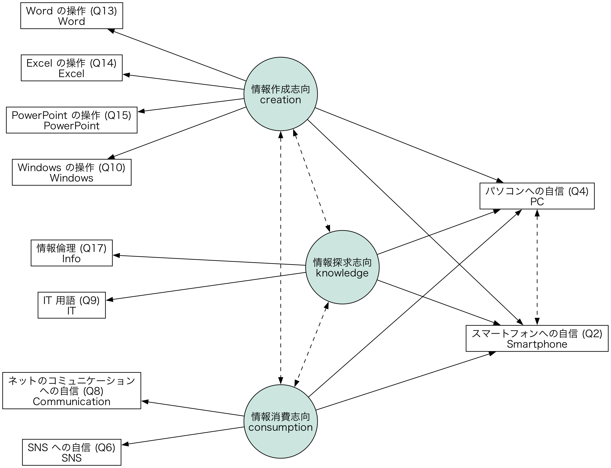
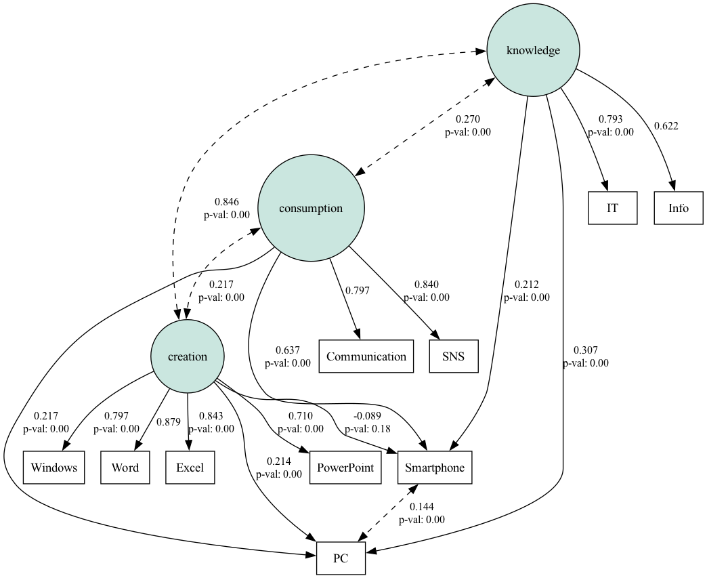

アンケートデータによる実践
それでは, アンケートデータを利用して SEM を実際に行ってみましょう. 今回は以下のパス図で表されるモデルを検証します.

今回はあくまで仮想データを利用した練習なので, このモデルは深く考えられたものではありませんが, 実際に SEM を利用する場合には事前に仮説を立てて, アンケートの質問の設計自体を仮説が検証できるような形にしておく必要があります.
このモデルでは, 次の 3 つの潜在変数が, パソコンとスマートフォンに対する自信に影響すると考えます.
- 情報作成志向 (creation): Word, Excel, PowerPoint, Windows の操作のうち, 身に付いているものの個数から測ります.
- 情報探求志向 (knowledge): 情報倫理の事柄のうち身に付いているものの個数と, 知っている IT 用語の個数から測ります.
- 情報消費志向 (consumption): ネットを使ったコミュニケーションと SNS に対する自信 (5 段階) から測ります.
質問が直接尋ねているのは技能や知識や自信であり, 「志向」は練習のために付けた仮の名前です. これらの質問が本当に志向を測っているかは, 別に検討する必要があります.
パソコンへの自信とスマートフォンへの自信は, 3 つの志向以外の共通の要因 (例えば, 自分の能力を評価するときの甘さや厳しさ) の影響も受けると考えられます. そこで, 2 つの誤差 \varepsilon の間に共分散を置きます. 3 つの潜在変数の間の共分散は, semopy が既定で推定します. 図では独自因子と誤差を省略しています.
Python では, 共分散構造分析用のライブラリ semopy を利用して SEM を実施できます.
semopy では, モデルを文字列で指定します. 潜在変数, 影響の向きのある関係, 共分散は, 記号を用いてそれぞれ以下のように表現されます.
- 測定モデル (潜在変数の定義)
潜在変数 =~ 観測変数1 + 観測変数2 + ...
- 構造モデル (影響の向きのある関係)
目的変数 ~ 説明変数1 + 説明変数2 + ...
- 共分散 (向きを仮定しない関係)
変数 ~~ 変数
目的変数どうしを ~~ で結ぶと, それらの誤差 \varepsilon の共分散を推定します.
それでは, モデルを構築し, 実際のデータで検証してみましょう. 観測変数には, チェックした選択肢の個数と 5 段階評価が混ざっていて単位が揃っていないので, 標準化しておきます. ただし, 観測変数を標準化しても潜在変数の分散は 1 にならないので, 係数の大きさを比べるときには後で説明する標準化推定値を使います.
#共分散構造分析
#------------------------------------------------------------------
#変数間の関係の仮説をモデルにして, データと矛盾しないかを確かめる.
import semopy
from semopy import Model
#データ型の変換 (すべて float でないといけない)
df_sem = df[num_columns].astype('float64')
#標準化する
df_sem = (df_sem - df_sem.mean()) / df_sem.std(ddof=0)
#わかりにくいから名前を変える
df_sem.rename({'Q2_num':'Smartphone'
,'Q4_num':'PC'
,'Q13_num':'Word'
,'Q14_num':'Excel'
,'Q15_num':'PowerPoint'
,'Q10_num':'Windows'
,'Q17_num':'Info'
,'Q9_num':'IT'
,'Q8_num':'Communication'
,'Q6_num':'SNS'}
,inplace=True
,axis='columns')
# 仮説 (文字列で指定する)
desc = '''
# (測定モデル) 潜在変数 =~ 観測変数
creation =~ Word + Excel + PowerPoint + Windows
knowledge =~ Info + IT
consumption =~ Communication + SNS
# (構造モデル) 目的変数 ~ 説明変数
PC ~ creation + knowledge + consumption
Smartphone ~ creation + knowledge + consumption
# (誤差の共分散) 変数 ~~ 変数
PC ~~ Smartphone
'''
# モデルを用意して推定する
mod = Model(desc)
res = mod.fit(df_sem)
print(res)
"""
Name of objective: MLW
Optimization method: SLSQP
Optimization successful.
Optimization terminated successfully
Objective value: 0.254
Number of iterations: 43
Params: 0.959 0.808 0.907 1.276 1.054 0.244 0.495 0.273 -0.102 0.341 0.800 0.144 0.645 0.365 0.290 0.371 0.614 0.496 0.295 0.525 0.364 0.228 0.635 0.134 0.772 0.152 0.462 0.386
"""
# 推定されたパラメータの一覧 (std_est=True で標準化推定値の列が付く)
estimates = mod.inspect(std_est=True)
print(estimates[['lval', 'op', 'rval', 'Estimate', 'Est. Std', 'p-value']])
"""
lval op rval Estimate Est. Std p-value
0 Word ~ creation 1.000000 0.878675 -
1 Excel ~ creation 0.959228 0.842957 0.0
2 PowerPoint ~ creation 0.808264 0.710333 0.0
3 Windows ~ creation 0.907300 0.797326 0.0
4 Info ~ knowledge 1.000000 0.621641 -
5 IT ~ knowledge 1.276020 0.793006 0.0
6 Communication ~ consumption 1.000000 0.796807 -
7 SNS ~ consumption 1.054072 0.839821 0.0
8 PC ~ creation 0.243879 0.214321 0.002827
9 PC ~ knowledge 0.494677 0.307485 0.000087
10 PC ~ consumption 0.272566 0.217144 0.0
11 Smartphone ~ creation -0.101796 -0.089464 0.182332
12 Smartphone ~ knowledge 0.340858 0.211889 0.003632
13 Smartphone ~ consumption 0.799502 0.636981 0.0
14 consumption ~~ consumption 0.634833 1.000000 0.0
15 consumption ~~ knowledge 0.133671 0.269868 0.0
16 creation ~~ creation 0.772483 1.000000 0.0
17 creation ~~ consumption 0.151833 0.216817 0.0
18 creation ~~ knowledge 0.462311 0.846120 0.0
19 knowledge ~~ knowledge 0.386469 1.000000 0.0
20 PC ~~ Smartphone 0.143877 0.143851 0.0
21 PC ~~ PC 0.644794 0.644631 0.0
22 Communication ~~ Communication 0.365059 0.365098 0.0
23 Excel ~~ Excel 0.289505 0.289424 0.0
24 IT ~~ IT 0.371377 0.371141 0.0
25 Info ~~ Info 0.613612 0.613562 0.0
26 PowerPoint ~~ PowerPoint 0.495509 0.495427 0.0
27 SNS ~~ SNS 0.294719 0.294701 0.0
28 Smartphone ~~ Smartphone 0.525353 0.525298 0.0
29 Windows ~~ Windows 0.364371 0.364271 0.0
30 Word ~~ Word 0.228052 0.227930 0.0
"""
# 共分散構造分析で説明した適合度の指標を表示
cols = ['DoF', 'chi2', 'chi2 p-value', 'CFI', 'TLI', 'RMSEA']
fit_stats = semopy.calc_stats(mod)
print(fit_stats.T.loc[cols])
"""
Value
DoF 27.000000
chi2 343.794134
chi2 p-value 0.000000
CFI 0.951725
TLI 0.919542
RMSEA 0.093192
"""
#パス図を描く (標準化推定値を表示する)
#plot_covs=True で共分散も表示する
semopy.semplot(mod
,dir_fig + 'SEM.png'
,plot_covs=True
,std_ests=True
,engine='dot')print(res) の Objective value: 0.254 は, 最小化した食い違い F_{\min} です. これにデータ数 1352 をかけた 0.254 \times 1352 \approx 343.8 が, 適合度の表の chi2 になっています. なお, p 値の 0.0 は p 値がちょうど 0 という意味ではなく, 表示できる桁より小さいことを表します.
パラメータの一覧の読み方
inspect() の出力は, パラメータ 1 つにつき 1 行です. semopy は測定モデルの行を 観測変数 ~ 潜在変数 の形で表示します.
- 0〜7 行目 (
観測変数 ~ 潜在変数): 測定モデルの因子負荷量 \lambda です.Estimateが 1 で p 値が-の行は, 識別のために 1 に固定した因子負荷量です. - 8〜13 行目 (
PC ~ ...とSmartphone ~ ...): 構造モデルのパス係数 \beta です. - 左右が異なる
~~の行 (15, 17, 18, 20 行目): 潜在変数どうしの共分散と, PC と Smartphone の誤差 \varepsilon の共分散です. - 左右が同じ
~~の行: 分散です. 潜在変数の行 (14, 16, 19 行目) は潜在変数の分散 \phi, 観測変数の行は独自因子 \varepsilon の分散です. PC と Smartphone の行は誤差 \varepsilon の分散です.
推定するパラメータは, 固定していない因子負荷量 5 個, パス係数 6 個, 潜在変数の分散と共分散 6 個, 観測変数の独自因子と誤差の分散 10 個, PC と Smartphone の誤差の共分散 1 個の計 28 個です. 観測変数は 10 個なので分散と共分散は 10 \times 11 / 2 = 55 個あり, 自由度は 55 - 28 = 27 となって, 出力の DoF と一致します.
Estimate は, 観測変数の単位で表した推定値 (非標準化推定値) です. 観測変数は標準化してありますが, 潜在変数の単位は 1 に固定した観測変数の単位に揃えただけなので, 分散は 1 になっていません. 例えば IT の因子負荷量 Estimate は 1.276 で, 1 を超えています. Est. Std は潜在変数も含めたすべての変数の分散を 1 に揃えたときの推定値 (標準化推定値) で, 係数の大きさを比べるときにはこちらを使います.
このモデルでは各観測変数が 1 つの潜在変数だけにつながっているので, 標準化した因子負荷量の二乗が共通性にあたります (Word なら 0.879^2 \approx 0.77). 後で扱う修正モデルの Windows のように 2 つの潜在変数につながる場合は, 潜在変数どうしの相関も含めて計算する必要があり, 負荷量の二乗の和にはなりません. PC の行の 0.645 は PC の分散のうち 3 つの志向で説明できなかった割合で, 3 つの志向は PC への自信のばらつきの約 35% を説明しています.
結果の解釈
semopy.semplot() で描いたパス図は次のようになります. 矢印に付いた数値は標準化推定値です.

測定モデルの標準化した因子負荷量は 0.62〜0.88 です. 自由に推定した 5 個の因子負荷量はいずれも有意で, 残る 3 個は単位を決めるために 1 に固定したので有意性を検定していません. 各観測変数は, 同じ潜在変数につながる他の観測変数と強く関係しています.
構造モデルでは, パソコンへの自信に対して, 情報探求志向 (0.31), 情報消費志向 (0.22), 情報作成志向 (0.21) の順に影響が大きく, いずれも有意です. スマートフォンへの自信には情報消費志向の影響が最も大きく (0.64), 情報探求志向 (0.21) が続きます. 情報作成志向からスマートフォンへのパス (-0.09) は有意ではありません (p = 0.18).
適合度は判断が分かれます. \chi^2 検定では, モデルが完全に合っているという仮説が棄却されています (\chi^2(27) = 343.8, p < 0.001). データ数が 1352 と多いので小さな食い違いも検出されやすく, 回答が正規分布に従わない影響もあるので, 食い違いの大きさを他の指標で確かめます. CFI (0.952) は目安の 0.95 を上回り, 後で計算する SRMR (0.040) も目安の範囲内です. 一方で, RMSEA (0.093) は許容範囲の 0.08 を超え, TLI (0.920) も 0.95 に届いていません. したがって, このモデルは大きく外れてはいないものの, データに合っていない部分を含んでいます.